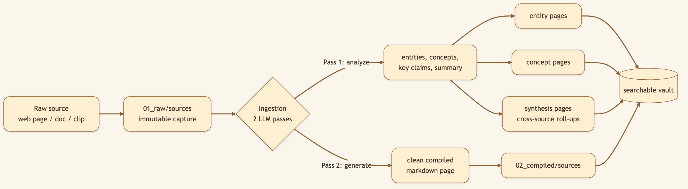
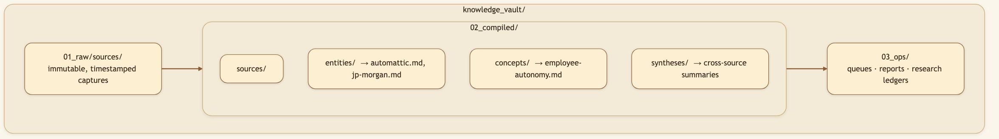
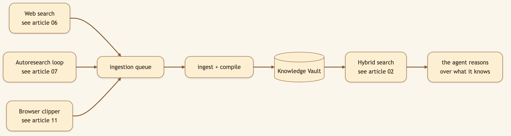

LinkedIn hook (use as the post's first line): "We built a memory that compounds instead — organized around things and ideas, not chat logs." Audience: LinkedIn → Medium. Engineers, researchers, founders, and knowledge workers tired of re-doing research.
Most AI tools perform web search, remember bits and pieces, and maybe generate an impressive report for the afternoon. By morning, the work is gone. Ask the same question next week and the tool does the same research twice — and the webpage it relied on may already have changed or disappeared.
CapyHome's Knowledge Vault is built on the opposite bet: that the value of an agent grows with what it can preserve from useful sources — and that durable knowledge should be organized the way you think, around things (entities) and ideas (concepts), not around transcripts of who said what.
🖼️ [User add: image containing — a split "before/after" graphic. Left: a messy chat history list labelled "what everyone else stores." Right: a clean grid of entity/concept cards labelled "what CapyHome stores." Make it screenshot-able for the LinkedIn carousel.]
Here's the core design decision. The vault doesn't file knowledge under "the chat where we talked about X." It files it under two kinds of pages:
automattic, jp-morgan).employee-autonomy, retrieval-augmented-generation).Every source the agent reads gets tagged with the entities and concepts it touches, and those tags roll up into pages that aggregate everything known about that thing — across every session. The result looks less like a chat app and more like a personal Wikipedia that writes itself.
Important distinction: the vault is not a dump of memory files or chat logs. Normal conversation memory lives elsewhere. The vault learns from web results, browser clips, and explicitly saved research artifacts — the material you would actually want to search later.


Turn on the search-to-vault pipeline and eligible enriched web results are auto-queued for ingestion. In practice, that means results with a URL and extracted markdown content. Empty rows are skipped, duplicates are deduped by URL/content hash, and trusted sources become durable vault pages. Research deposits into the vault as a side effect of doing the work — the library grows while you're busy with something else, and the next related question starts from what you already found.

🖼️ [User add: image containing — a real screenshot of the vault explorer in the workspace UI (left tree of entities/concepts, a compiled page open on the right). Capture it from http://localhost:2026 → workspace → vault tab after running one research task.]
The implementation is where the durability comes from. A few decisions worth calling out:
_analyze_source (prompt: ANALYZE_SOURCE_PROMPT) extracts entities, concepts, topic tags, a summary, key claims, open questions, gap queries, and synthesis references; _generate_source_sections (prompt: GENERATE_PAGE_PROMPT) writes the clean compiled page. A heuristic fallback runs if chain-of-thought ingest is disabled or the content is too short.requeue_all_claimed_items() returns items whose 15-minute worker lease expired (i.e. a crashed worker), and cleanup_orphan_compiled_files() prunes pages unreachable from the manifest. Phase 1 drains the queue with parallel workers that claim items in batches of 100 (work-stealing). Phase 2 reprocesses any source missing reference pages. The manifest is saved periodically so a mid-run crash loses almost nothing.VaultVectorIndex chunks compiled markdown pages, calls an OpenAI-compatible /embeddings endpoint, and stores a local file-backed index in .vault_state/vector_index.json + .vault_state/vector_index.npz — not a remote vector database.min_trust_score, default 0.55) keeps weak sources out, and lint/prune garbage-collects orphaned or low-value pages, with a dry-run mode that shows what it would remove first.JPM → jp-morgan) into one canonical page; an entity browser surfaces your most-covered entities and your coverage gaps.Key files: backend/src/control_plane/vault_learning/_ingest.py, _lint.py, _entities.py; API in backend/src/gateway/routers/vault.py.
Format: vertical 1080×1920, hard hook in the first 2s, fast jump cuts. Screen recordings sped up 1.5×, captions burned in (most Shorts play muted).
[0:00–0:03] Hook — AI-generated b-roll: a robot/face having its memory wiped, text slams in: "Every AI forgets you. This one doesn't."
[0:03–0:12] Screen — run a research task (sped up 1.5×): "I asked CapyHome to research a company." (agent searches, works.) Caption: "Watch what it does on the side."
[0:12–0:22] Screen — vault explorer (fast jump cuts, quick zoom): "It filed everything into a vault — by entity and concept." (snap through the company page + 2 concept pages, no slow pans.)
[0:22–0:28] Screen — new session: "New chat. I ask a follow-up." (instant answer, citing the vault.) Caption: "It already knew."
[0:28–0:30] End card — AI-generated or static: "Open source 👇" + repo URL.
ComfyUI can't render your actual UI — the screen segments are real screen recordings (OBS / QuickTime). Use ComfyUI for the hook b-roll ([0:00–0:03]) and the end card ([0:28–0:30]), then edit everything together in CapCut / Resolve / ffmpeg.
🖼️ [User add: 2–3s hook clip rendered in ComfyUI (memory-wipe visual, 9:16) + a matching end card. Drop both into the editor around the screen-recording segments above.]
Run a deep-research task, then open the vault explorer. Watch entity and concept pages appear. Ask a follow-up the next day — it won't start from zero.
git clone https://github.com/CapyHome/CapyHome.git && cd CapyHome && make config && make docker-start
Next: Hybrid Vault Search → — finding the right page even when you forget the right words.